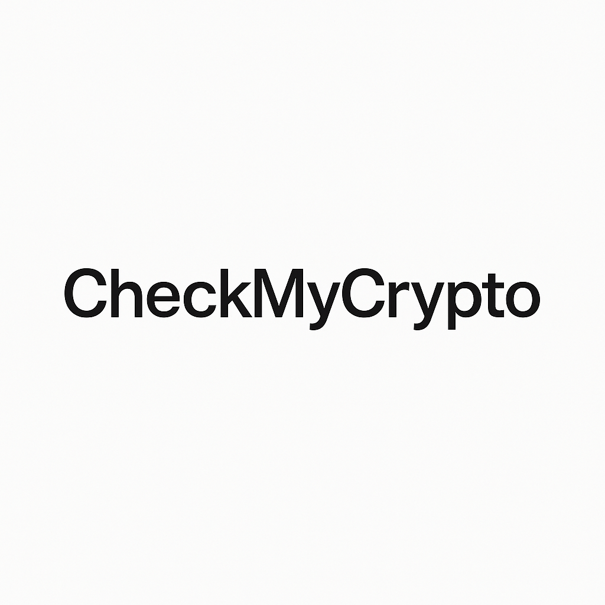

CheckMyCrypto — Telegram-бот для проверки криптокошельков на основе on-chain данных.
Проверяйте перед каждым переводом.
Всегда проверяйте и отправителя, и получателя перед переводом.
Цена от 50 ₽ (≈ $0.55). Пакеты проверок — дешевле.
Открыть Telegram-бот
On-chain данные • Проверка отправителя и получателя • ~30 секунд
Сервис носит информационный характер и не является финансовой рекомендацией.